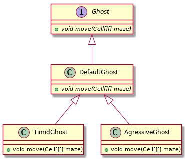

Polymorphisme dynamique en Java
Table des matières
1 Polymorphisme dynamique
Le polymorphisme en programmation, c'est la possibilité d'avoir plusieurs implémentations correspondant à un même nom, et que ce soit "la bonne" qui soit exécutée.
On distingue deux types de polymorphismes : le polymorphisme statique et le polymorphisme dynamique.
1.1 Polymorphisme statique
C'est lorsque le choix de l'implémentation a lieu à la compilation. Il y a deux types de polymorphisme statique en Java :
- la surcharge de méthodes
- c'est lorsque plusieurs méthodes d'une
même classe 1 ont la même signature. Par exemple les
méthodes
printde la classe java.io.PrintStream. - la généricité
- c'est lorsqu'on utilise la notation
<X>pour paramétrer une classe ou une méthodes en fonction d'un type (de classe) donné. Le paramétrage est limité en Java car la seule chose qui change au niveau des implémentations, c'est la vérification de type.
1.2 Polymorphisme dynamique
Comme on va le voir, c'est lorsqu'une méthode est redéfinie (et non pas surchargée), donc avec la même signature2, pour différentes classes d'une même hiérarchie.
2 Exemple
Supposons qu'on veuille implémenter un jeu de Pacman™. On doit pouvoir
représenter les fantômes qui vont poursuivre le Pacman. S'ils ne se
distinguaient que par leur vitesse ou même leur couleur, on pourrait
simplement tous les implémenter par des instances d'une même classe
avec seulement des valeurs différentes pour les attributs
correspondants. Mais on veut pouvoir implémenter différentes
stratégies de déplacement pour ces différents types de fantômes (par
exemple dans la/les méthode[s] move).
Les deux "solutions" suivantes présentent chacunes des inconvénients :
- implémenter tous les types de fantômes dans une même classe
Ghost, et doter celle-ci d'un attribut d'instanceghostType. Ensuite, dans la méthodemove, faire unswitch(ghostType)pour exécuter le code correspondant au type du fantôme. - implémenter chaque type de fantôme dans une classe spécifique
(e.g.
TimidGhost,AgressiveGhost,…), chacune ayant son implémentation propre d'une méthodemove.
Le problème de la première "solution" est que toutes les
implémentations sont regroupées dans une même classe qu'il faut
modifier pour pouvoir ajouter de nouveaux types. Le problème de la
seconde est qu'on ne peut pas manipuler les différents types de façon
uniforme (par exemple avoir une structure de données regroupant
ensemble tous les fantômes pour appeler leur méthode move).
3 Héritage
C'est le même genre de problèmes qu'avaient les concepteurs de la bibliothèque standard de Java avec les différents types d'exceptions et les différents types de collections. La solution offerte par la Programmation Orientée Objet est de faire des classes spécifiques qui héritent d'une même classe parente (on parle aussi de classes dérivées d'une classe de base) et/ou qui implémentent une même interface.
- héritage d'une classe de base

- héritage (implémentation) d'interface

- héritage (implémentation) d'interface et de classe de base

La relation d'héritage étant une relation "est un" (e.g. un TimidGhost "est un" Ghost), elle est transitive. Le dernier diagramme est donc équivalent à :

Grâce au principe de substitution,la relation d'héritage étant de type type "est un", tout ce qu'il est possible de faire avec une instance d'une classe de base est aussi possible avec une instance d'une classe dérivée. De même, pour qu'une classe implémente une interface, elle doit fournir des implémentations pour toutes les méthodes de l'interface. Ainsi, on pourra manipuler des objets à travers une référence vers l'interface (ou la classe de base) :
1: // la liste en argument contient des objets de n'importe quelle classe 2: // implémentant l'interface Ghost (ou héritant de la classe Ghost). 3: public game(List<Ghost> ghosts, Cell[][] maze){ 4: for(Ghost ghost : ghosts){ 5: ghost.move(maze);// c'est la bonne implémentation de move qui est appelée ! 6: } 7: }
- Le typage statique a permis à Java (le compilateur) de vérifier à
la compilation (d'où le statique) que le code à la ligne
5 est correct, car tout ce que l'on fait à travers les
références de type
Ghostsera possible (cf. principe de substitution). - Le polymorphisme dynamique permet à Java (la JVM) de découvrir à
l'exécution (d'où le dynamique) le code à exécuter pour effectuer
l'appel à la méthode
moveà la ligne 5. Ce code pouvant être défini dans chacune des classes implémentant l'interface / héritant de la classe de base.
3.1 Interface
En Java, on déclare une interface avec le mot-clé interface :
1: public interface Ghost { 2: // public est optionel car les méthodes d'une interface sont par défaut publiques 3: public void move(Cell[][] maze); 4: }
Généralement, les méthodes déclarées dans une interface n'ont pas
d'implémentation (à la ligne 3, on a un ; au lieu d'un bloc de code avec l'implémentation). Depuis la
version 8 de Java, les interfaces peuvent définir des implémentations
par défaut. Par exemple, une implémentation par défaut qui ne ferait
rien :
1: public interface Ghost { 2: default public void move(Cell[][] maze){ 3: } 4: }
Les interfaces ne peuvent pas contenir d'attributs d'instance, donc les éventuelles implémentations par défault ne peuvent pas
On indique ensuite comme suit qu'une classe implémente une interface :
1: public class AgressiveGhost implements Ghost { 2: public void move(Cell[][] maze){ 3: /* 4: Ici, l'implémentation du déplacement d'un fantôme agressif 5: */ 6: } 7: }
La signature de la méthode move dans
l'implémentation de la classe AgressiveGhost,
à la ligne 2 est (et doit être !) exactement la
même que celle dans l'interface Ghost à la
ligne 3. Il ne s'agit donc pas de surcharge, mais de
redéfinition.
Une classe peut hériter de (implémenter) plusieurs interfaces et doit donc fournir des implémentations pour chacune des méthodes des interfaces implémentées pour lesquelles il n'y a pas d'implémentation par défaut. Si ces interfaces déclarent des implémentations par défaut pour la même méthode (avec la même signature, donc), il faut qu'elle déclare elle-même une implémentation pour lever l'ambiguïté.
3.2 Classe de base
Une classe peut hériter (étendre) une classe (et une seule) de base quelconque :
public class AgressiveGhost extends DefaultGhost { public void move(Cell[][] maze){ /* */ } }
Par ailleurs, si une classe ne déclare pas explicitement hériter d'une
classe, elle hérite directement de la classe Object. Tout se passe
comme si l'on écrivait extends Object. Comme
la relation d'héritage est transitive, toutes les classes héritent
donc, directement ou indirectement, de la classe Object.
Tout se passe alors comme si chaque instance de la classe dérivée
'contenait' une instance de la classe de base, avec tous les attributs
et méthodes de celle-ci. Les attributs/méthodes déclarés en
private dans la classe de base ne sont pas
accessibles dans les classes dérivées, contrairement aux attributs
protected. Il est possible de redéfinir les
méthodes de la classe de base dans les classes dérivées. Par exemple,
on redéfini les méthodes equals et
toString héritées de la classe
Object. Le polymorphisme dynamique assurant
que ce soit toujours la méthode définie dans la classe la plus dérivée
(la plus proche de la classe d'instanciation d'un objet en remontant
dans la hiérarchie de classes parentes) qui sera exécutée.
Dans les constructeurs de la classe dérivée, la première chose à faire
est d'appeler un constructeur de la classe parente avec un appel à
super(/*liste d'arguments éventuels*/)
. Sinon, tout se passe comme si le bloc d'implémentation du
constructeur commençait par un appel implicite au constructeur par
défaut (i.e. sans arguments) de la classe de base : super().
Dans les méthodes, il est possible d'appeler les méthodes
(accessibles) de la classe de base. Pour deśigner l'implémentation de
la classe de base lorsqu'il y a une redéfinition dans la classe
dérivée, on emploie le mot-clé super :
public class AgressiveGhost extends DefaultGhost { public AgressiveGhost(){ super(Color.RED); } public void move(Cell[][] maze){ /* */ super.move(maze); } }
3.3 Classe abstraite
Les interfaces ne contiennent pas d'implémentation avec des attributs et les classes "normales" contiennent une implémentation complète et peuvent être instanciées. Il y a en Java un concept intermédiaire avec une implémentation partielle, qui ne peut être instanciée : la classe abstraite.
public abstract class DefaultGhost { Color color; public DefaultGhost(Color color){ this.color = color; } public abstract move(Cell[][] maze); }
Une classe pourra hériter de celle-ci comme d'une classe normale, mais devra alors fournir des implémentations pour toutes les méthodes abstraites pour être elle-même concrète. La classe abstraite ne peut pas être instanciée et toute tentative d'appeler directement le constructeur provoquera une erreur de compilation.
4 Qu'utiliser ? Interface ? Classe concrète ? Classe abstraite ?
Pour garantir la plus grande réutilisabilité, il faut utiliser des interfaces. En effet, elles n'imposent aucune restriction car n'importe quelle nouvelle classe peut toujours implémenter une interface. En revanche, si deux bibliothèques ou frameworks imposaient chacun que les classes héritent d'une classe, il ne serait pas possible de faire une classe qui fonctionne simultanément avec les deux, puisqu'on ne peut hériter que d'une seule classe (mais implémenter autant d'interfaces qu'on veut).
Lorsque plusieurs classe, par exemple qui implémentent une même interface, ont de l'implémentation en commun, on peut factoriser celle-ci dans une parente. Généralement, celle-ci n'a pas vocation à être instanciée et l'on utilisera des classes abstraites. Dans l'exemple classique implémentant la taxonomie animale, pour un programme gérant des animaux :
Il est évident que des objets de classe Mammal ne devraient pas être instanciés : cette classe devrait
donc être abstraite.
En pratique, l'héritage de classe concrète est souvent dû à une évolution de programme, lorsqu'on veut ajouter une nouvelle classe donc le comportement est suffisamment proche de celui d'une autre classe pour qu'on veuille réutiliser l'implémentation de celle-ci.